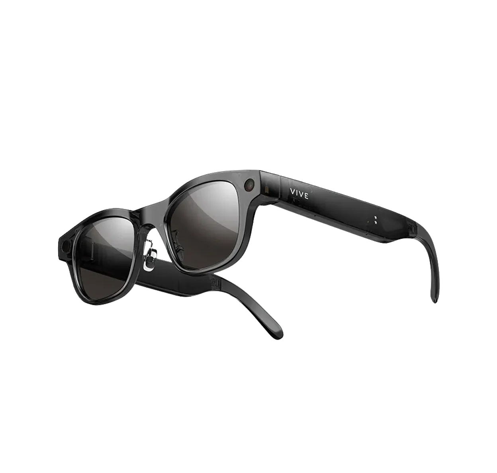

UX CASE STUDYAI WEARABLE EXPERIENCE
HTC VIVE EAGLE
AI 智慧眼鏡互動設計
定義智慧眼鏡的硬體互動流程，並整合手機 App，打造眼鏡與手機協同的跨裝置體驗。
探索設計
01 / HOW IT WORKSGLASSES → VOICE → APP
語音和按鍵操作眼鏡
透過語音喚醒詞或按鍵下指令，鏡頭擷取眼前畫面，眼鏡以提示音、LED 與語音回應；相關內容之後可在手機 App 查看。
01輸入
「Hey VIVE」
02眼鏡回應
03之後在 App
02 / HARDWARE INTERACTIONCORE UX WORK
眼鏡人機交互流程
定義用戶每次操作後，眼鏡在什麼時機以提示音、LED 或語音回應，並透過硬體與 App 讓用戶掌握當前狀態。
03 / COMPANION APPAI QUERY · MEMORY
App 的 AI 對話與記憶設計
以下是我主要負責的兩個模組，以及交付開發的 UX 稿，標示每個畫面的狀態與操作。
首頁入口、對話詳情、圖片保存、選擇與分享，以及無紀錄與分享上限等狀態。
App 資訊架構中，綠色為我負責的模組。
04 / ERROR HANDLINGCONNECTION LOST
定義連接丟失時的處理方式
眼鏡與手機斷線時，各功能在操作前、操作中如何處理，並用語音、對話框或通知告知。
每個功能在操作前、操作中斷線時的處理（阻擋、中斷或失敗），以及用語音還是手機通知告知。